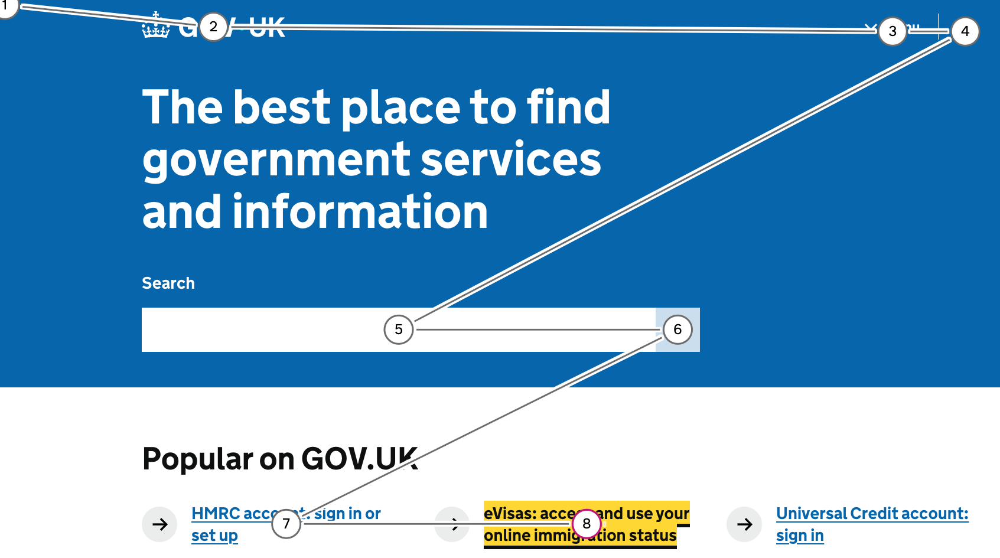
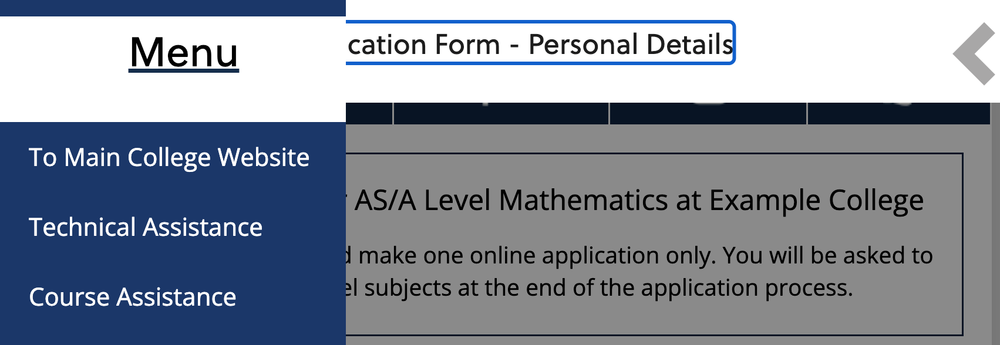

2.4.3 Focus Order (A)
What WCAG says:
If a web page can be navigated sequentially and the navigation sequences affect meaning or operation, focusable components receive focus in an order that preserves meaning and operability.
Check the official guidance for Understanding 2.4.3 Focus Order
What it means
Elements that receive focus, such as buttons and links, need to be in a logical order when a keyboard user navigates the page. This will usually match the visual order of left to right and top to bottom.
Why it matters
This allows keyboard and screen reader users to navigate the content in a logical way.
How to check
- Using a keyboard, navigate through the page using the tab key. Make sure that the visible focus order is logical. If you’re using a Mac, you’ll need to set up keyboard navigation first by going to System Settings and Keyboard, then checking “Keyboard navigation”.
- On mobile applications you can check this with the native screen reader on the device. Use the screen reader’s rotor to identify interactive components such as links and buttons, then swipe between them.
- When new content appears as a result of interacting with an element, check that the focus goes to the new content in a logical way.
Occasionally you may need to use the arrow keys to switch between menus or tabs on a page.
There are several tools that help you check the focus order on a page. These include:
- Accessibility Insights from Microsoft
- ANDI developed by the US Government
- Wave from WebAIM
How to test in detail for 2.4.3 Focus Order
Good example
Logical tab order
The tab order on GOV.UK broadly goes from left to right, top to bottom, in an intuitive way.

Common mistakes
Illogical focus order on menu
On a college’s application platform, the user activates a button to open the menu on the left hand side. However, when the user continues to tab, focus moves through the page behind the menu, rather than the menu.
This particular example fails because after opening the menu, the user needs to tab backwards to reach the items in it. When a user opens a menu, they would expect their next tab to be within the menu.

Other common mistakes
The following scenarios may also have an impact on focus order:
- When styles are disabled, the page’s focus order may no longer make sense.
- It can be distracting if non-interactive elements (such as headings) receive keyboard focus.
- When zoomed in or viewing on a mobile device, the tabbing order may not match the visual order.
Related success criteria
- 1.3.2 Meaningful Sequence (A) relates to the reading order of all meaningful content on the page, not just focusable elements
- 2.1.1 Keyboard (A) requires everything to work with a keyboard, regardless of whether the focus is in a logical order or not.
- 2.4.7 Focus Visible (AA) requires that keyboard focus is always visible, regardless of the order.
- 2.4.11 Focus Not Obscured (Minimum) (AA) requires that elements are not covered by something else on screen when they do receive focus.
- 3.2.1 On Focus (A) requires focus to stay where it is when an element receives focus.
- 3.2.2 On Input (A) requires focus to stay where it is when something interactive is changed, like a toggle switch.
Useful resources
- Focus - Home Office Design System Accessibility pages
- How to activate keyboard navigation on MacOS (A11y Collective)
Last updated
This page was last updated in January 2026.